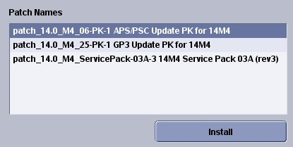

- 00000018WHA30B00CGYZ
- id_20023566.12
- Oct 16, 2023 6:25:11 PM
Loading software updates from the repository or CD/DVD
You can install software updates to the host computer from the repository or from a CD/DVD.
Prerequisites
| Personnel requirements | |||
|---|---|---|---|
| Required persons | Preliminary requirements | Procedure | Finalization |
| 1 | - | 10 minutes | - |
| Tools and test equipment | |||
|---|---|---|---|
| Item | Quantity | Part number | Manufacturer |
| Class M Service Key | 1 | - | - |
| Service Pack CD/DVD | 1 | - | - |
| Required conditions |
|---|
| Load updates after MR apps and service software have been loaded. |
| Service packs must be loaded at root level (applications not up). |
| Invoke Guided Install as root and show the Patches tab. See Invoking Guided Install as root. |
About this task
Note Updates should not be loaded with application software running.
Procedure
- Either insert the update CD/DVD in the appropriate drive and select CD/DVD, or select
Repository to load updates from /usr/g/insite/data.
Figure 1. Guided Install patches 
- Click the applicable update to load and select Install.Note You must load one update at a time.
Figure 2. Available updates 
Result
Updates that load successfully show in the Installed Patches window. A confirmation message also shows in the GUI status section.Figure 3. Install done message 
The update process looks for the software revision and conflicting information before loading. If the software revision of the update does not match the application's revision, a message shows in the status section of the GUI that explains that the update cannot be loaded.
If the message Patch_tst_M4_01 = PA conflicts with patch_tst_M4_03-PA-1 shows, you must delete the most recently installed update from the system before you load the new update. See Removing software updates.